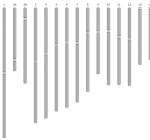
Eukaryotes
Genomes for many organisms, using data fetched via API.
Genomes for many organisms, using data fetched via API.
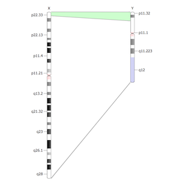
Homology, basic
Simple relations between two chromosomes.
Simple relations between two chromosomes.
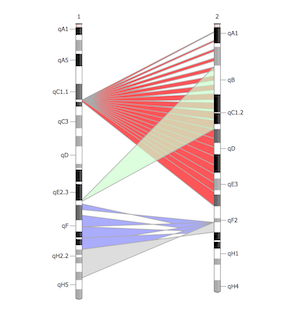
Homology, advanced
Relations between two chromosomes, using color and opacity.
Relations between two chromosomes, using color and opacity.

Homology, interspecies
Relations between two chromosomes, each from a different taxon.
Relations between two chromosomes, each from a different taxon.
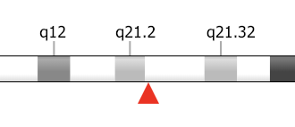
Annotations, basic
Location of a gene on a chromosome.
Location of a gene on a chromosome.

Annotations, overlaid
Overlaid features on chromosomes.
Overlaid features on chromosomes.
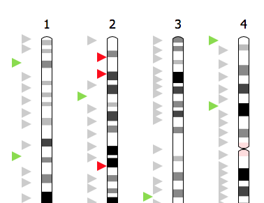
Annotations, tracks
Stacked features on chromosomes.
Stacked features on chromosomes.
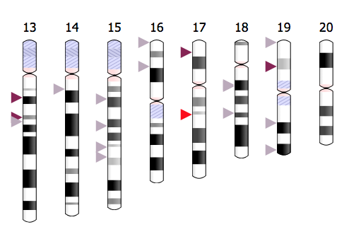
Annotations, external data
Data fetched from a third party API, annotated by shape and color.
Data fetched from a third party API, annotated by shape and color.
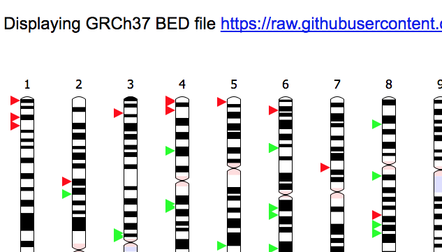
Annotations, file URL
Features parsed from standard file formats, e.g. BED, loaded via URL.
Features parsed from standard file formats, e.g. BED, loaded via URL.
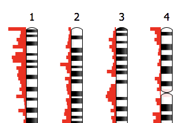
Annotations, histogram
Use shape to show feature distributions on chromosomes.
Use shape to show feature distributions on chromosomes.
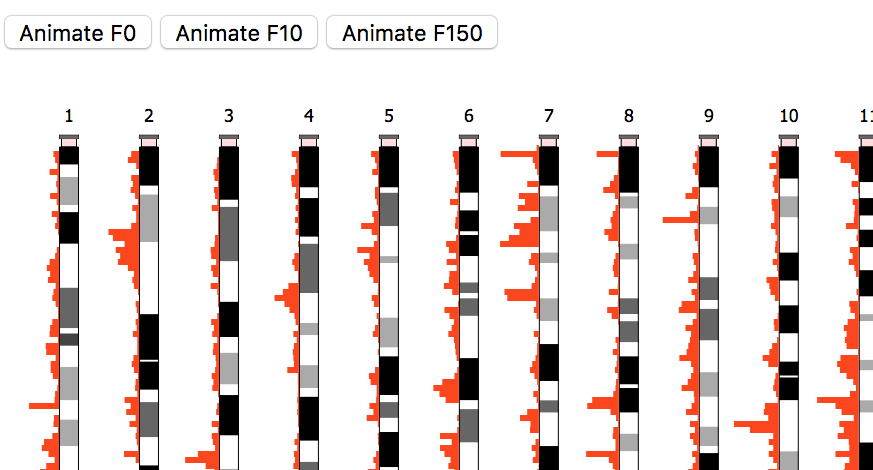
Annotations, animated
Genome-wide transitions in expression over time.
Genome-wide transitions in expression over time.
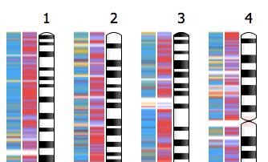
Annotations, heatmap.
Use color to show feature distributions on chromosomes.
Use color to show feature distributions on chromosomes.
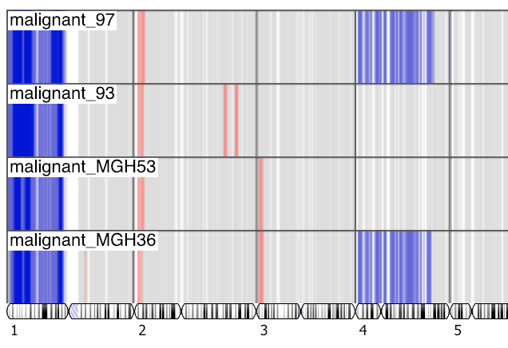
Geometry, collinear
All chromosomes arranged in one line.
All chromosomes arranged in one line.
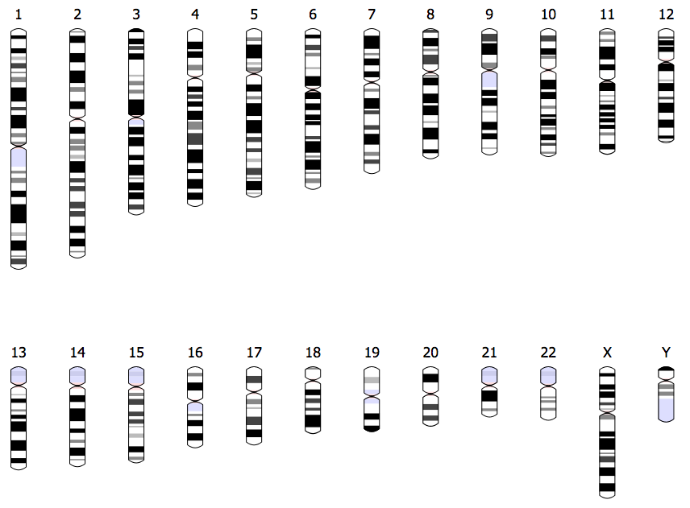
Layout, small
Chromosomes surrounded by other content.
Chromosomes surrounded by other content.
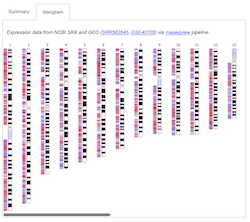
Layout, tabs
Tab containers and scrolling for large ideograms.
Tab containers and scrolling for large ideograms.
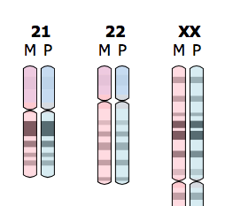
Ploidy, basic
Diploid genome of a human female.
Diploid genome of a human female.

Ploidy, rearrangements
Loss and gain of cytogenetic arms and chromatids.
Loss and gain of cytogenetic arms and chromatids.

Ploidy, recombination
Gene conversion and double chromosome crossover among chromatids.
Gene conversion and double chromosome crossover among chromatids.

Multiple, trio
Three human genomes.
Three human genomes.
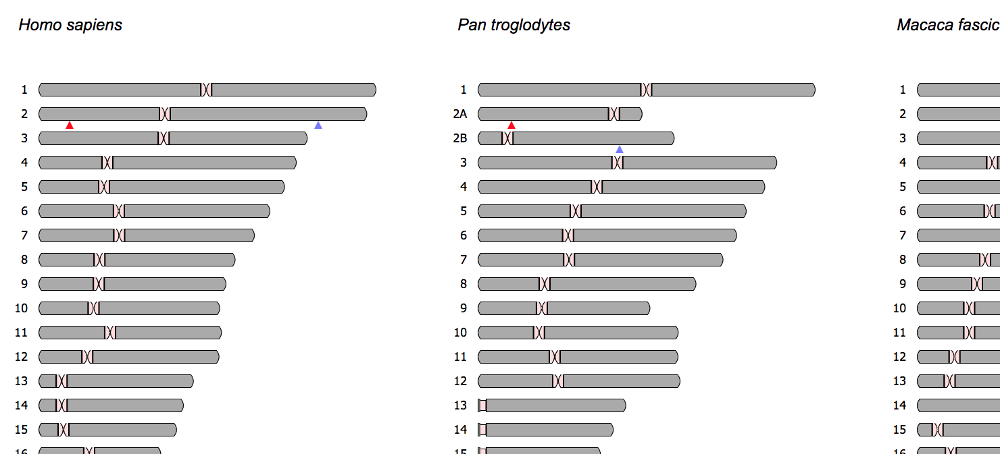
Multiple, primates
Three primate genomes, with orthologs annotated for comparison.
Three primate genomes, with orthologs annotated for comparison.